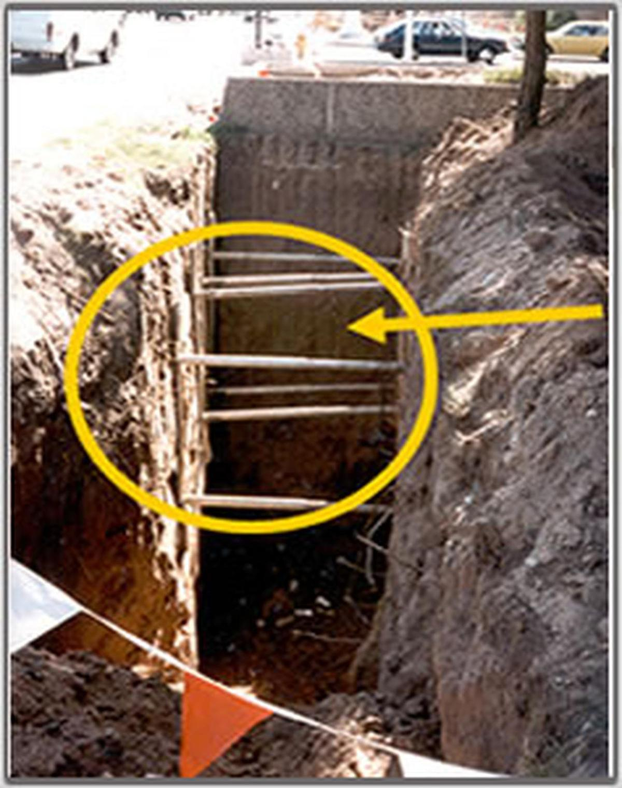
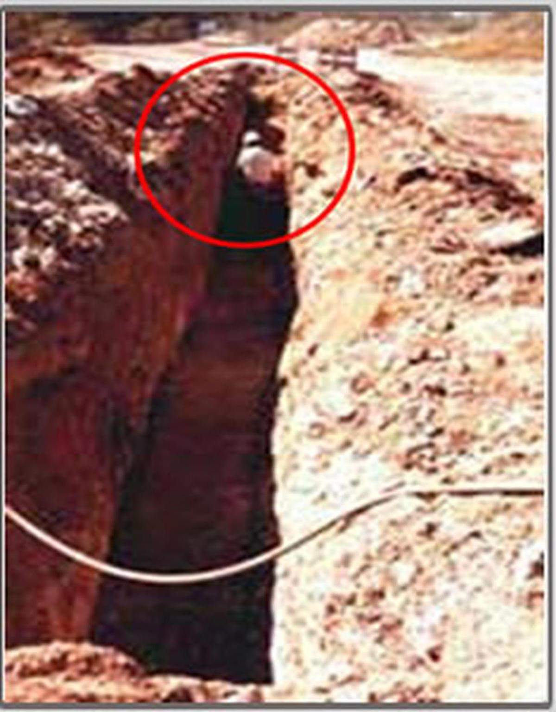
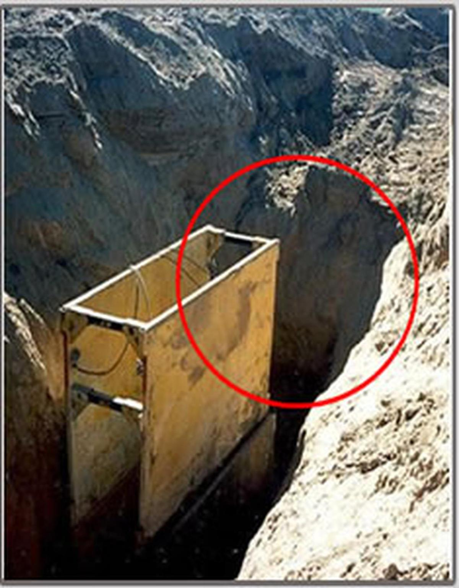
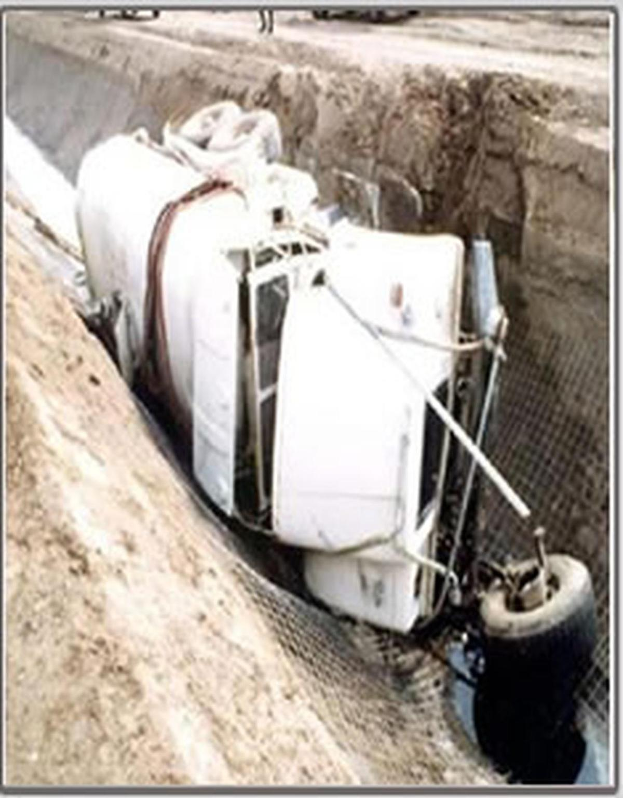
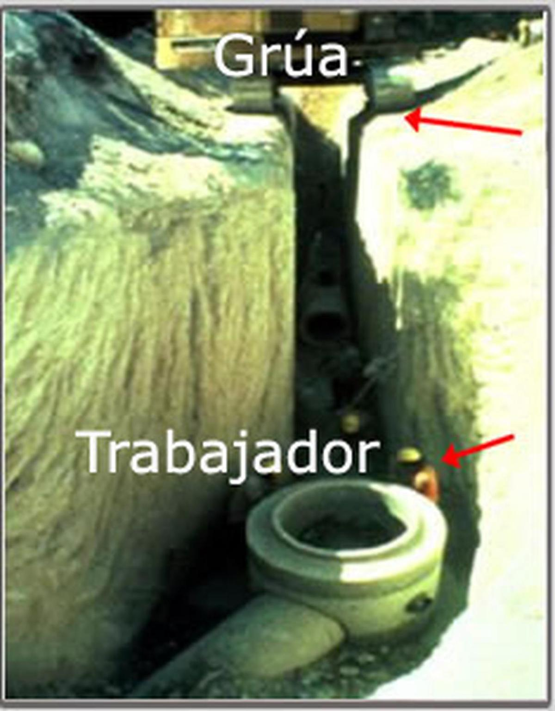
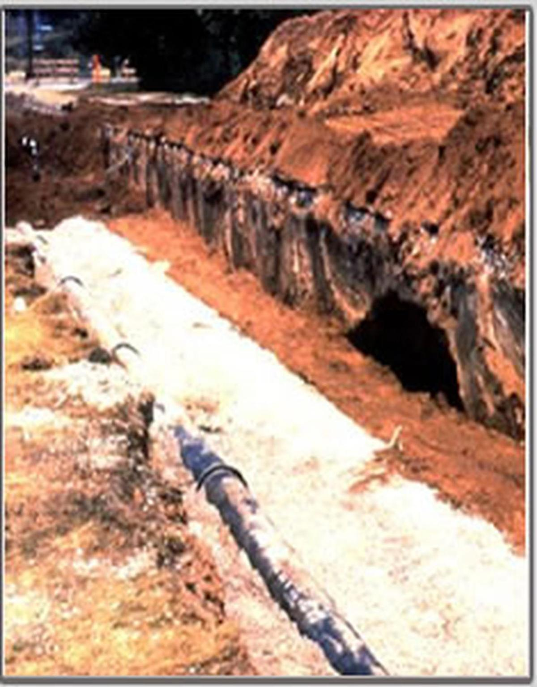

Hay señales que debe identificar para derrumbes
Ejemplo 1:

Reproduce el siguiente audio
Ejemplo 2:

Reproduce el siguiente audio
Ejemplo 3:

Reproduce el siguiente audio
Ejemplo 4:

Reproduce el siguiente audio
Ejemplo 5:

Reproduce el siguiente audio
Ejemplo 6:

Reproduce el siguiente audio
Ejemplo 7:
Reproduce el siguiente audio